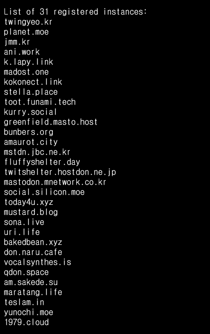

요즘 일론 머스크가 핫하다. 트위터를 인수했단다.
트위터를 인수하고 가장 먼저 하는 일이 직원 자르기다! 직원을 자르고는 인증 뱃지를 팔기 시작했다...
일론 머스크가 트위터를 인수하겠다고 하면 트위터의 주가가 요동친다. 올해 내내 그랬다.
2022년 중반쯤? 아마 4~5월 쯤에 일론 머스크가 트위터를 인수한다고 마구 떠벌리고 다녔었다.
그 이후로 일론 머스크가 트위터를 인수할 두려움에 다들 마스토돈으로 이주하기 시작했다.
물론 그 이후로도 7개월이 걸리긴 했지면 기어코 머스크는 트위터를 자신의 손 아래 놓았다.
머스크가 바라는 "이상적인 트위터"가 무엇인지는 모르겠으나, 일단 겁나게 마케팅을 잘 한다.
그 마케팅이 트위터에게 이득이 되냐고? 요즘 트위터 이미지 추락한다는데?
당연히 마스토돈이다! 마스토돈이 저절로 홍보되고 유입이 늘어난다!
마스토돈은 연합형 Microblogging SNS으로써 트위터의 "대체제"로써 급부상한 SNS다.
마스토돈이 다른 점이라면, 역시 연합형이라는 점과 개인이 운영하는 경우가 많다는 것.
연합형이라는 시스템이 그 내에서 트위터와 비슷하지만 또 약간 다른듯한 커뮤니티를 형성하는 것을 보고 트위터의 유저들이 적응을 하지 못하는 경우가 종종 있었다.
하지만, 할 사람들은 대부분 잘 적응하는 것 같아 그것도 사람마다 Case-By-Case 아닌가 하는 생각이 들었다.
이런 Case-By-Case에 맞는 사람들은 그대로 연합에 남아 마스토돈에서 활동을 하게 된다.
마스토돈을 비롯한 연합(Fediverse, 이하 페디)에선 새로운 유입들에 신나면서도 불안한 분위기이다.
기존의 서버들이 생각보다 큰 이주 현상에 버티질 못했다. 기존 레이드때도 서버가 터지지는 않았다만, 이번엔 워낙 많은 수가 쏟아져 들어오니 기존의 인스턴스 서버들이 버티지 못하고 뻗어나가기 시작했다.
트잉여, 큐돈, 플래닛 같은 거대 서버들이 트래픽을 못 버티고 터지거나 페디 간의 통신도 터지는 일이 있었다.
이러한 움직임에 발맞춰, 새로운 인스턴스들이 생겨나기 시작했다.
인스턴스 개설 자체는 기본적인 Linux 지식과 네트워킹 관련 지식, DB 관련 지식만 있으면 쉽게 할 수 있다.
아님 호스토돈이나 마도호스트와 같은 대행 서비스들도 많이 생겨난 요즘에는 더욱 쉬워졌다. 돈만 있으면 인스턴스가 뚝딱이다.
이런 공세에 힘입어 많은 인스턴스가 생겨났다. relay.mastodon.kr이 한국 연합우주 릴레이 서버 주소인데, 여기로 가면 현재 이 릴레이에 등록된 서버 리스트를 쭈루룩 볼 수 있다.

벌써 31개나 등록되어 있다.
레이드 이전에는 11개 서버에 불과했는데, 그새 늘어난 것이다.
새로운 서버들은 대부분 연합 우주에 처음 들이는 발걸음으로 인스턴스 생성으로 첫 발걸음을 들인 것이다.
그새 새로운 서버들도 많이 생겼다. Kurry, YuruToot, today4u, SiFNet 등등...
연합형 - 분산형 SNS가 바라는 분산이 이루어지고 있지만, 유저들의 분산은 그렇지 않은 것이 문제였다.
트잉여와 같은 메이저 서버들에 몰려들어 다른 서버로는 가지 않는 사태가 벌어졌던 것이다.
이 사태는 트잉여가 가입을 받다가 제한하고, 또다시 제한을 해제했다가 제한하고룰 반복하며 저절로 유저들이 다른 서버로 분산된 탓이다.
서버들이 늘어나고, 사용자들이 분산되는 일이 좋은 일이긴 하지만, 한편으론 약간의 걱정이 있다.
마스토돈은 트위터의 완벽한 대체제가 아니다. 당연하겠지만서도 트위터는 트위터만의 특징이 있고 마스토돈은 마스토돈만의 특징이 있다.
이는 결국 마스토돈에서 적응한 사람들이 다시 트위터로 돌아갈 수 있음을 뜻한다.
이러한 현상은 이전에도 지속적으로 존재했던 현상 중 하나다. 이미 연합우주에서 몇년간 생활했던 유저들은 대수롭지 않게 여기는 부분이다.
이러한 "회귀" 현상이 일어나서 버려지는 인스턴스들은 항상 올바르게 폐쇄될 것이라는 보장은 없다. 연합우주는 연합이라는 특성상 리모트들에 흔적을 남기기 때문이다.
이러한 서버들이 관리되지 않고 방치된다면 이 또한 문제가 될 것이라고 생각한다.
그리고... 마스토돈 내에서도 급격한 유저들의 유입으로 관리자의 부족을 호소하고 있다.
서버 인프라의 확충이 먼저 아닌가? 하고 생각하는 사람들도 있지만, 결국에는 수많은 사람들을 관리해야 하는 아주 거대한 커뮤니티 사이트나 다름없기 때문에 관리자들의 확충과 활동이 필요하다.
특히 이러한 관리자들은 모두 자원봉사다. 서버 또한 자원봉사이면서도, 관리자들도 모두 자원봉사다.
이러한 지속성이 계속 지속될지에 대한 약간의 의문이 들지만, 그것 또한 지켜봐야 할 일이다.
이러한 이동 중에서도 혐오자들이 가끔 넘어오는 경우가 있다. 혐오자와 함께 정치와 관련된 계정이나, 진상들이 오기도 한다.
최근에 정치 관련된 규젱에 관련해서, 트위터에서 극단적인 정치 활동을 하는 일부 유저들이 인스턴스에서 분쟁을 일으키거나, 인스턴스 운영자들을 조롱하거나 비방하는 일이 있었다.
나로써는 꽤 충격적인 일이였다.
또한, 별것 아닌 것으로 집착하며 인스턴스 관리자의 직장까지 찾아가며 스토킹하는 일도 있었다.
이러한 극단적인 유저들도, 연합우주에서 받아주진 않을 것이지만, 이러한 유저들의 유입이 계속되는 것도 걱정되는 사항 중 하나다.
모든 관리자들은 자원봉사기에, 이러한 자원 봉사자의 정신에 큰 데미지를 주는 행위는 상당히 충격적이고 걱정되는 일이다.
이러한 마스토돈 대이주 현상은 한번의 레이드로 끝나는 것이 아닌, 지속적인 현상으로 지속될 것임을 느끼는 이상, 이러한 현상을 주의깊게 살펴보아야 할 것이다.
> 여담
연합이라는 특성 탓에 약간 곤란해지는 경우가 있다. pawoo.net과 같이 곤란한 미디어가 날아오는 인스턴스는 아무래도 국내법적으로 문제가 된다.
한국의 서버인 경우엔 이러한 인스턴스에서 날어온 엄한 미디어가 법적으로 문제가 될 수 있기에... 음...
{kind=link}